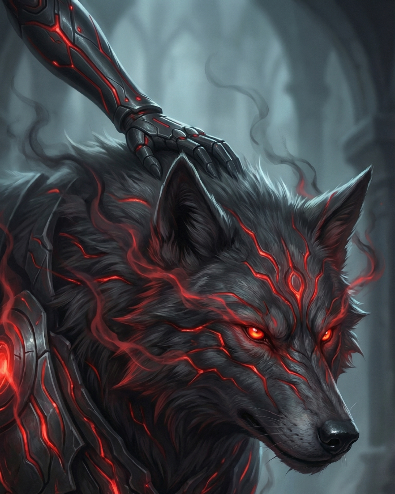

Kobu
Summary
Zara's shadow beast companion—born from rage and grief, tempered into loyalty, and renowned as one of the most powerful shadow beasts in living memory
Description
Kobu is not merely a shadow beast; he is a living testament to transformation, to the possibility that even the darkest parts of ourselves can become sources of strength. When Eirik first taught Zara the ancient blood magic ritual to manifest a shadow beast, he warned her: 'What emerges will reflect who you are in this moment—every fear, every rage, every hidden darkness given form.' He expected her creation to be volatile, perhaps uncontrollable. What manifested exceeded even his worst fears.
Appearance
Kobu erupted into existence like a scream made flesh, a roiling mass of inky darkness so dense it seemed to devour light. Where most shadow beasts are roughly wolf-sized with fluid, ever-changing forms, Kobu towered, his presence so overwhelming that even experienced Duskkin hunters instinctively stepped back. His form writhed with barely contained fury, tendrils of shadow lashing out at nothing, and his eyes—those gleaming, intelligent eyes that mark all shadow beasts—burned with an intensity that mirrored Zara's rage. In those first moments, Eirik genuinely feared he had made a terrible mistake. But then something remarkable happened. As Zara locked eyes with her shadow beast, as she confronted the physical manifestation of her grief, her bloodlust, her rage at a world that had stolen her family—she didn't flinch. She didn't turn away.
Behaviour
She reached out, placed her hand against that writhing darkness, and whispered: 'I see you.' The shadow beast stilled. The frantic lashing ceased. And in that moment, the bond was forged—not just the typical symbiotic connection between Duskkin and shadow beast, but something deeper. Zara named him Kobu, a word from an old Duskkin dialect meaning 'the strength that comes after breaking.' It was a promise to both of them. Over the years, as Zara transformed from a rage-filled child into a master hunter and eventually into MI6's most valued Duskkin ally, Kobu transformed with her. His size never diminished—if anything, he grew larger as her power and skill increased—but his movements became controlled, purposeful. Where he once lashed out indiscriminately, he now strikes with surgical precision.
Abilities
The burning intensity in his eyes cooled into focused determination. Even among the Duskkin, where shadow beasts are revered and respected, Kobu stands apart. Other shadow beasts sense his power and give him wide berth. In the Urban Jungle, there are whispered stories: Kobu tearing through an Iron Bloom Behemoth's supposedly impenetrable hide; Kobu dragging a Prowler out of its shadow-phase mid-hunt; Kobu standing between Zara and an entire pack of corrupted creatures, his form expanding until it became a wall of living darkness that nothing could penetrate. His loyalty to Zara borders on the absolute. The telepathic bond they share runs so deep that they often move as one entity in combat—Zara flowing through fighting forms while Kobu mirrors her movements in shadow, creating a devastating synchronised assault. When she's injured, he becomes a protective barrier, his form wrapping around her like living armour.
Threat level
When she hunts, he scouts ahead, his consciousness bleeding into hers so completely that she sees through his eyes as easily as her own. But perhaps Kobu's most remarkable quality is what he represents to other Duskkin struggling with their own darkness. Young Duskkin who manifest shadow beasts twisted by trauma or rage are sometimes brought to observe Zara and Kobu. Eirik, in his wisdom, understood that seeing Kobu—born from such profound darkness yet transformed into something noble—gives them hope. It shows them that the shadow beast ritual is not about denying one's darkness, but about confronting it, accepting it, and choosing what to become.
Affiliation
Duskkin
Abilities
- Exceptional Size and Power (Twice normal shadow beast scale)
- Phase Through Solid Matter
- Shadow Tendril Manifestation
- Perfect Combat Synchronization with Zara
- Life Force Drain and Transfer
- Merge with Zara (Enhanced form)
- Telepathic Bond (Unusually deep connection)
- Protective Barrier Formation
- Dimensional Tracking
- Intimidation Aura
- Adaptive Form (Can gentle or amplify presence)